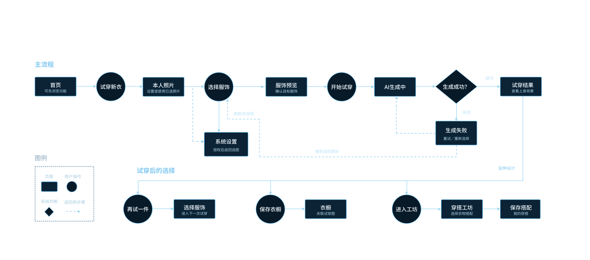

买前决策
下单前的上身判断
晚上刷到心仪大衣的折扣，加购后仍在反复对比。
- 行为
- 查看模特图、商品评论与买家秀
- 阻碍
- 参考对象与本人身材不同，难以代入上身效果
01 / 用户研究
从网购时的上身顾虑出发，我将研究聚焦在买前决策与日常搭配两个场景，梳理用户从发现服饰到再次使用衣物的需求。
18–35岁女性，高频网购服饰、注重穿搭表达
希望下单时更有把握，也能更轻松地搭配已有衣物。
晚上刷到心仪大衣的折扣，加购后仍在反复对比。
周末想尝试新的穿搭，却需要翻找、试搭多件衣服。
左右滑动查看完整旅程 →
| 阶段 | 01发现衣服 | 02加购／犹豫 | 03下单前 | 04收货后 | 05日常穿搭 | 06长期使用 |
|---|---|---|---|---|---|---|
| 用户行为 | 在电商／社媒 浏览穿搭 | 加入购物车 反复对比 | 查看商品评论 与买家秀 | 实际收到衣服 上身试穿 | 打开衣柜 反复挑选 | 衣服不断增加 整理已有衣物 |
| 用户心理 | “这件好像 很好看” “我穿会不会 显胖？” “别人穿好看 不代表我适合” “怎么和买家秀 不一样？” “今天穿啥？” “好像又没
衣服穿了” | |||||
| 用户痛点 | 模特身材不同 难以代入本人 | 购买反复犹豫 决策负担大 | 买家秀的参考 仍然有限 | 上身效果与 购买预期有落差 | 不知道怎么搭 衣服容易闲置 | 衣橱难以管理 已有衣物难复用 |
| 产品机会 | AI虚拟试穿 | 本人形象预览 | 个性化试穿 | 提前建立预期 | AI穿搭工坊 | 数字衣橱管理 |
用户真正想解决的，不是“买不到衣服”，而是服装网购的“确定性”（这件衣服我穿好不好看）和“掌控感”（现有的衣服怎么配）。
02 / 竞品与定位
| 参照路径 | 已有解法 | 可借鉴的设计 |
|---|---|---|
| 独立试穿Google Doppl · 2025 ↗ | 侧重个人风格探索：上传穿搭图，在本人照片上试穿并保存造型。 | 图片输入与本人预览用轻量输入获得直观的上身参考。 |
| 商品内预览 | 侧重购买判断：Zara以个人形象预览商品，Amazon用AR查看鞋履上脚。 | 预览衔接商品选择让效果展示服务于购买判断。 |
| 虚拟换装ZEPETO ↗ | 侧重虚拟形象表达：选购数字服饰、组合造型，用于虚拟社交。 | 衣物组合与方案保存按品类组织衣物，保留搭配结果。 |
用生成进度与“正在为你穿衣”等提示解释等待，超时后提供继续等待或重试的选择。
将服饰与人体的融合、材质和褶皱作为生成质量重点，再用衣橱管理与组合搭配承接后续使用。
后续可与销售方探索效果付费或分成，并验证试穿能否帮助购买决策、减少退货。

AI驱动的试穿助手与个人数字衣橱
专注解决两个核心场景：
买前试穿：用户截图商品图进入AI试穿，快速看到服装的上身效果；衣橱搭配：录入日常衣物，自由组合穿搭，盘活衣柜。
03 / 核心功能
以试穿预览辅助买前判断，通过衣物收藏与组合搭配延伸日常使用。
首页允许先浏览功能，通过提示条引导本人照片设置。用户可从相册选择或拍摄全身照，根据页面提示准备照片，并在预览页确认或重选。
设计取舍：浏览阶段保持开放，在本人试穿前完成照片准备，让设置步骤服务于具体任务。
确定本人照片后，用户上传目标服饰图，先查看预览，再发起试穿。预览页支持重新选择，便于在生成前核对衣物及图片完整性。
设计取舍：保留生成前的确认节点，让用户有机会检查和更换素材，再进入需要等待的生成过程。
生成时提供等待反馈，完成后以大幅试穿图支持查看与放大。用户可再试一件、收藏衣物或进入搭配；生成失败时，可重新上传或返回首页。
设计取舍：优先支持上身效果判断，再承接收藏与搭配，让后续操作围绕用户对这件衣服的判断展开。
设计取舍：同时照顾新衣试穿与已有衣物整理，让衣橱成为后续选衣和搭配的基础。
04 / 成果与评估
独立推进产品方案与MVP开发，接通AI试穿主流程，并围绕完成体验、结果质量与持续使用设计评估方法。
跑通AI试穿的主链路，构建了“AI试衣+智能衣橱”的产品闭环方案。
左右滑动查看完整评测表 →
| 评测指标 | 记录的行为与反馈 |
|---|---|
| 试穿完成率、响应时间 | 提交任务、服务返回、结果展示、失败原因与等待耗时 |
| 结果可用率、任务满意度 | 衣物完整性、人物保持、明显失真与任务后评价 |
| 衣橱活跃度 | 衣物保存成功、分类与再次查看 |
| 搭配创建率 | 进入工坊、选择上下装、搭配保存成功 |
| 次日留存率 | 匿名用户标识、首次访问日期与次日回访 |
先观察试穿是否顺利完成，再分别追踪保存衣橱与创建搭配的后续选择，结合等待耗时和失败原因定位流失，并以次日回访衡量持续使用。
05 / 复盘与取舍
复盘聚焦首次体验、衣橱管理与搭配方向，并形成以下改进设计。
将预设模特与本人照片集中在同一选择页：预设模特用于快速体验，本人照片用于查看个人上身效果。
优化思路：先用预设模特降低首次体验门槛，再由用户选择本人照片。
按回看效果、收藏衣物与复用搭配三种用途，区分保存的内容。
优化思路：试穿结果自动留在记录中，衣物由用户主动加入衣橱，为后续搭配建立清晰的选择范围。
工坊后续将支持选择上装与下装，生成整套效果，并将满意的组合保存到“我的穿搭”。
优化思路：先由用户选择上下装，再统一生成整套效果，让搭配预览继续服务于购买判断。
用目标上衣搭配已有裤子，观察整套预览能否帮助用户作出购买决定。